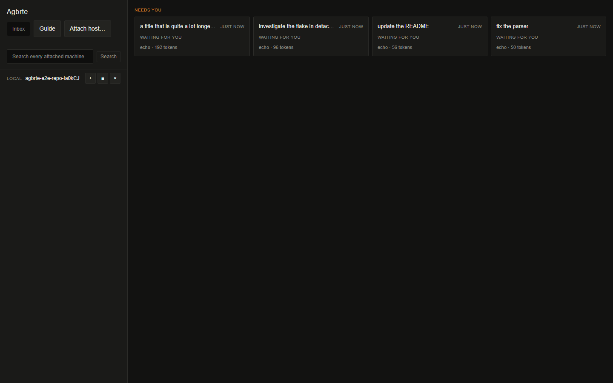
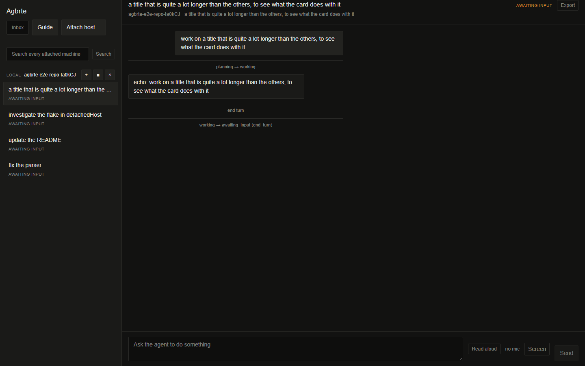
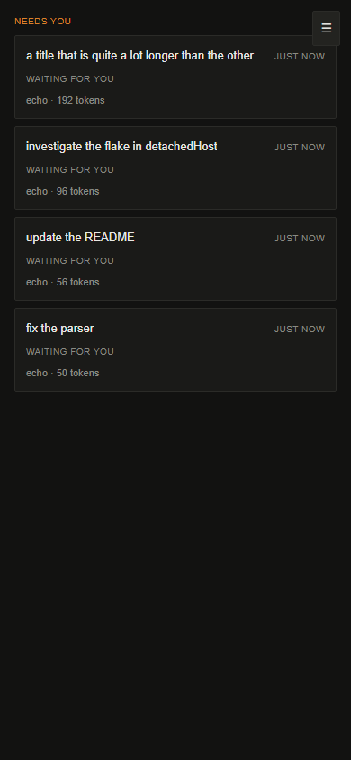

An agent workbench built around one decision: a session belongs to a process that owns its log, not to the interface watching it. Everything else in the system is a consequence of that.
Close the app and the run continues. Open it on another machine and you are in the same session, mid-turn. The transcript is the truth, not a cache of it.
Most agent tools put the loop inside the application. That makes closing the window a decision about the work. Here the application is a client: it renders and commands, and holds no session state at all.
Detaching a process is not enough on its own. If the app still owned the log, a running agent's events would have nowhere to go the moment it quit — the work would continue and the transcript would not, which is worse than stopping.
Two devices are two connections to one owner, not two copies of a session. They see the same transcript because there is only one, and turns are ordered by arrival at the host — the only ordering that exists when neither client can see the other.
A remote session does not stream tool calls across the network. The host is installed on the target, so a file read is a local file read, and the link carries only the transcript. Which is also why the link is allowed to drop.
Nothing is installed system-wide and nothing needs a package manager on the far side: a private Node runtime is unpacked under ~/.agbrte, the host bundle is copied in version-stamped, and the process is started detached so it survives the ssh session that started it.
Windows needed a second answer to the same question. A Windows host cannot listen on a unix socket, so it listens on loopback and proves who it is with a bearer token — and the file holding that token is given an explicit ACL, because chmod 0600 is close to a no-op there and inherits whatever the parent directory allows.
Work decomposes. The risk in letting an agent decompose it is a tree nobody can see the bottom of, spending money nobody agreed to. Both are handled by structure rather than by watching.
| Limit | Value | What it protects |
|---|---|---|
| Tree depth | 3 | A deeper tree almost always means the split was wrong, not that the work is deep |
| Children per session | 8 | Keeps one node reviewable by a person |
| Open descendants | 24 | The whole tree's concurrent sprawl |
| Budget | reserved at spawn | Taken from the parent's remainder before the child exists — checking at spend time is a report, not a limit |
The transport table is a promise about where work can run. Six of these are not built — and the point of the table is that asking for one is refused by name rather than quietly running the work on the laptop instead.
| Target | Status | What is missing |
|---|---|---|
| This machine | observed | — |
| Linux, macOS or Windows over SSH | observed | — |
| WSL distribution | not built | the runner; the control channel it needed now exists |
| Docker / Podman container | not built | its control port must be published when the container starts |
| Kubernetes pod | not built | kubectl port-forward held open; a pod can be rescheduled mid-run |
| Dev container | not built | the container transport, plus reading devcontainer.json |
| Hosted agent service | not built | a locality with no transport — a different path, not a harder one |
| Custom | not built | there is no plugin API to register with |
One accent colour on a neutral ground, spent only where a person has to act. On the dashboard that mark appears exactly once — on the heading of the group that needs them.



Quit the app mid-turn. The host keeps working and keeps writing. Reopen and you rejoin the same session at the same pid, mid-turn if it still is.
Attach from a second device and you are in the same session, not a copy of it. Both windows show the same transcript because there is one.
A client asks for a role and the host decides. Read-only means read-only: enforcement is with the owner, because a client that can still send is not read-only.
agbrte run . "…" is scriptable and exits with a code. The same host, the same log — the GUI is not privileged.
Attach a workspace over ssh. The agent's file reads and shell commands happen there; only the transcript crosses the network.
Serve the interface over your own network. A permission request that appeared on your desk can be answered from the sofa — and the other client is told who answered.
The recurring failure in this project has a name: correct code behind a seam nobody crosses. A module that passes its own tests, is reached by nothing, and reports a capability the product does not have. Several of the rules above exist because that happened and was caught.